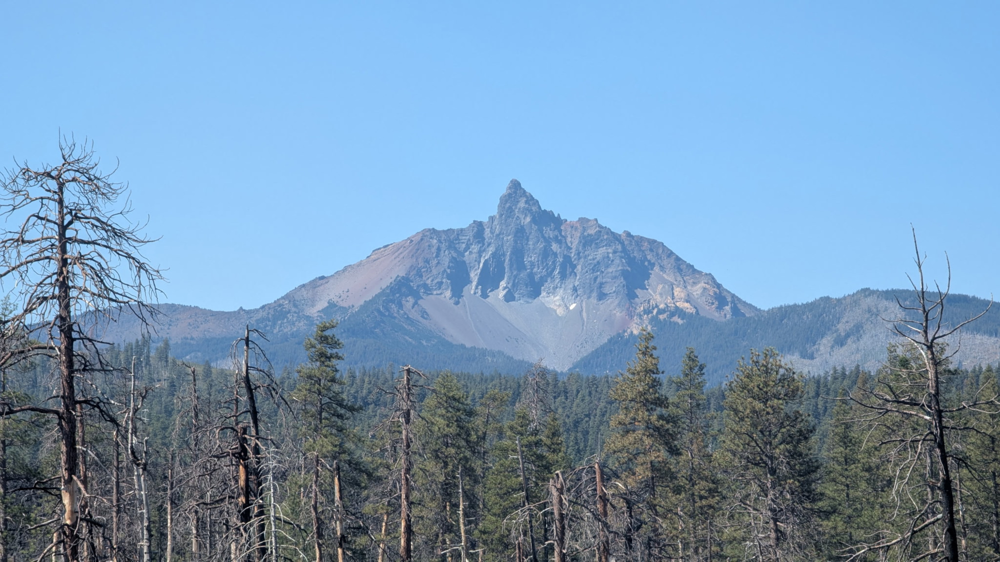
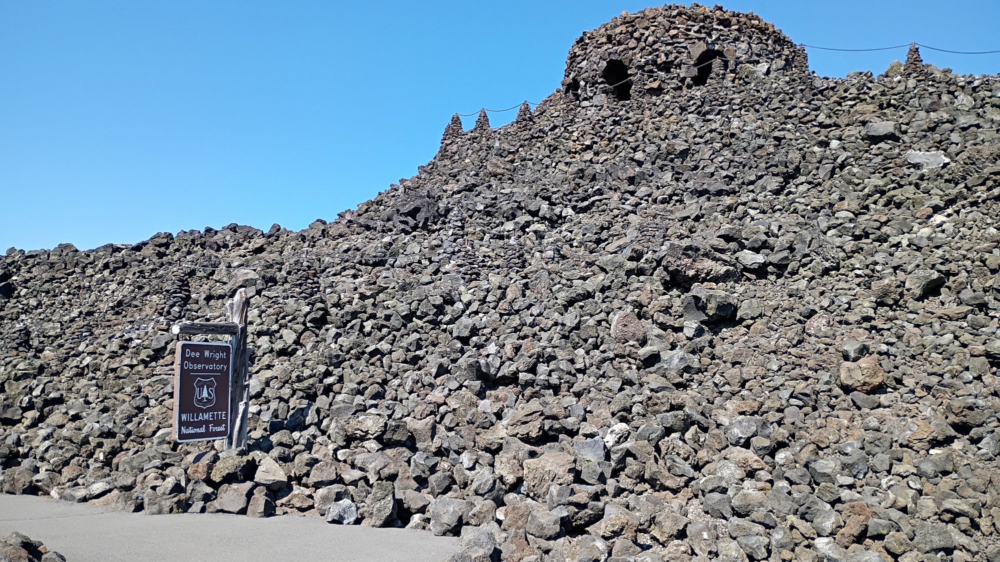
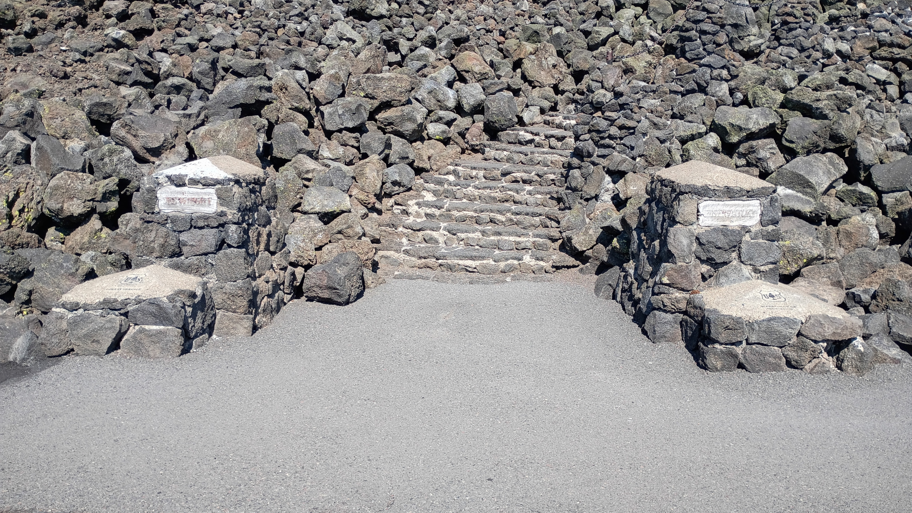
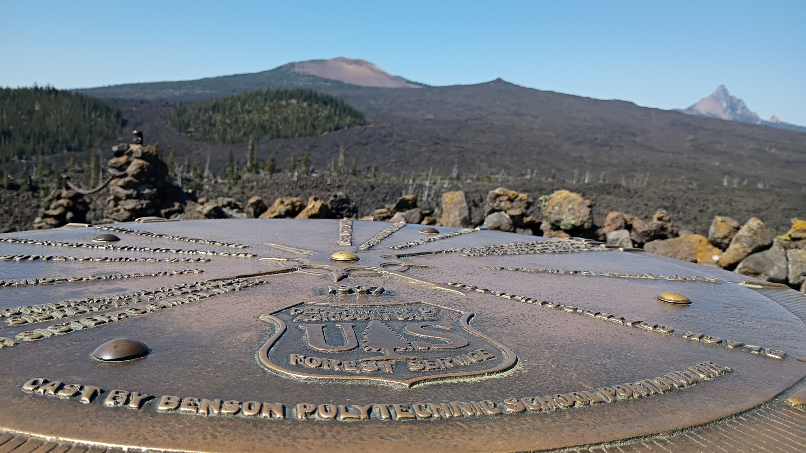
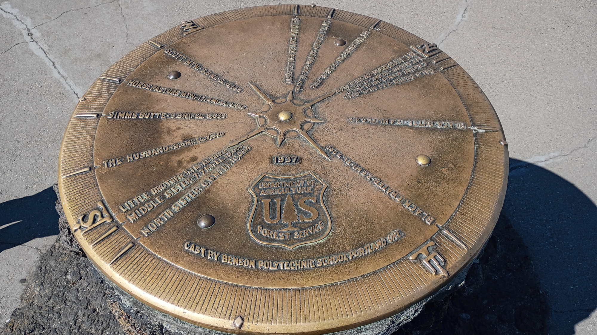
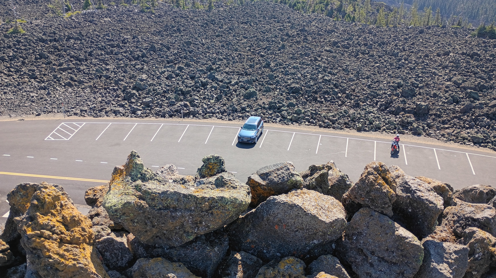
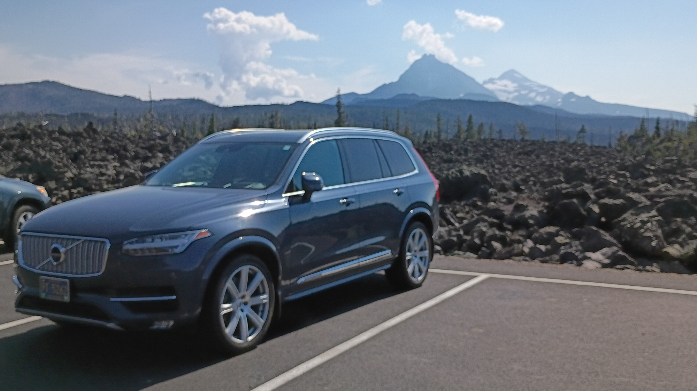

2025.09.23 :: viaggio
Travel Date: 19 September 2025.
Take a trip along the southern section of the McKenzie Pass-Santiam Pass National Scenic Byway to the summit of the McKenzie Highway (Oregon 242) and you will find the Dee Wright Observatory settled atop vast, black lava flows. On the Cascade Range at 5,187 feet, this mountain observatory offers panoramic views of the Mount Washington and Three Sisters Wilderness areas.
As you make your way up to the observatory you will find interpretive panels with accounts of early travelers and area geology. Inside the observatory strategically placed windows frame the surrounding mountain peaks. On a clear day, you may even see Mt. Hood located a whopping 78.5 miles to the north. Continue up the stairs to the roof and you will discover a bronze peak finder with the names and elevations of the surrounding buttes and mountain peaks.
Went here a couple of weeks after Labor Day, in the early afternoon, and had the place mostly to ourselves. We couldn't come in on the Mckenzie Highway from the south as part of it was closed due to the Foley Ridge Wildfire so we come over via Hwy 20 and through Sisters, OR.

Once we got within a couple miles of Dee Wright we saw a peak that was unknown to us, so we named it Mr. Uckfayouyay.

The first view of Dee Wright looks like some baddies castle from a cartoon.

Stairway.
Interior of Dee Wright Observatory. There's a stone plaque inside detailing its history. The plaque is pretty old and hard to read so they installed a bronze plaque next to it with the same text.
There are big windows showing nifty views, and small cutouts which, when you look through them, show you a single mountain, and the name of the mountain is under the cutout. Nifty!
It turns out Dee Wright is not an observatory for stars but rather an observatory for mountain tops.
There was a pair of nesting birds near the top of one of the windows.


The bronze wayfinder on top of the observatory. In the top pic you can see the same mountain we named Mt. Uckfayouyay. Seems the mountain's actual name is Mt. Washington.
Those settlers, I tells ya, no imagine had they.
The wayfinder sat on top of a three(ish) (four(ish)?) foot lava stone plinth.
Due to the smoke we couldn't see Mt. Hood, but we could see all the other mountain tops well, including Mt. Jefferson, which we also saw when we stayed at Timberline Lodge on Mt. Hood.

We were pretty high up.
Steps down were tricky - all uneven and different heights and clingy sharp volcanic rock. Like velcro but murdery.

We daren't try any offroading up there.
The drive back out toward Sisters showed just how high the lava rocks were piled.